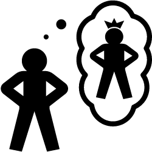

This chapter will discuss the concept of material self. It encompasses possessions labeled as "mine," such as clothes, which reflect aspects of personality and are designated as "my wardrobe."

What is Material Self?
person owns like his or her car, house, clothes, even her family and friends. As stated by William James, the self is all things a person believes to be his or hers and contribute to his or her material self. It encompasses possessions labeled as "mine," such as clothes, which reflect aspects of personality and are designated as "my wardrobe." The body is identified as the innermost aspect of the material self, with certain body parts perceived as more private or intimately personal. Clothing follows, acting as both protection and projection of the body. Family is considered part of the material self, connected by blood and sharing both glory and shame. The home, where individuals develop various aspects of their lives and feel most comfortable, is strongly linked to identity. Finally, other possessions like gadgets, cars, and collections contribute to the material self.
People are likely to purchase products that can relate to their personality. Material possessions signify some aspects of one’s sense of self and identity.
Possessions, tell a lot about their owners. Thus, one’s sense of self and identity is influential on how an individual chooses to purchase his/her wants and how he/she makes economic decisions that will address his/her personal and social needs
The decisions that go into the purchase of items and certain services is dependent on a number of factors, including financial constraints, availability of items and services, and the influence of family and friends.
However, the most important factor is determining whether these items and services fall under:
a. Wants. Synonymous with luxuries. People buy them for reasons that do not warrant necessity.b. Needs. These are importantly for survival. Food, clothing, and shelter are basic needs so people purchase them out of necessity.
In the process of acquiring material goods, people generally consider 2 things:
a. Utility. Concerned with how things serve a practical purpose.b. Significance. Concerned with the meaning assigned or the object. It is also concerned with how objects become powerful symbols or icons of habit and ritual which can be quite separate from their primary function.
What are the challenges, issues, or problems that College Students experience about their Material Self?
Instead of saving money for future purposes, the students tend to spend their money on material things to satisfy their needs.
Materialistic students may lead to poor academic behavior. They might be distracted by their own materialistic possessions and their worldly life. Conversely, some students may understand this as their parents' motivation for them to study well, thus, encouraging them to perform good academic behavior.
How does the Material Self contribute to the overall understanding of the self?
Improves self-confidence and self-image
To know our material self means that we know about our body—for example, its size, shape, and appearance.
It can help one understand their own limitations and capabilities, and can also aid in making informed decisions about one's physical and emotional well-being.
Can lead to a greater awareness and appreciation of the world around us.
Some philosophers argue that the material self plays a significant role in shaping our understanding of ourselves and our place in the world.
How can you manage or take care for the Material Self? What are the tips or advice that you can share to your fellow college students?
12 Tips Reducing Materialism
Ending materialism doesn’t mean forsaking all your possessions. Ridding yourself of everything you own would only prove you are still too preoccupied with possessions themselves. Someone who has developed a healthy inner world would see possessions as neutral. This shift is more about attitude than specific actions.
You aren’t the things you own. The problem is that you view things as possessions in the first place. Ownership is just a societal construct to keep order, it doesn’t have any deeper meaning. Separate your identity from the things you own.
Relationships are about doing, not having. You can’t have a girlfriend, boyfriend or spouse. Although those terms are fairly commonplace, they demonstrate that many people still view relationships as possessions.
Create a system of goals and challenges. Materialism fills a void. Replace that uncomfortable filler with goals and challenges. Although many of my challenges are directed towards material gain, that isn’t the real point.
Serve. Invest your energies into helping other people. I don’t view acts as being on a continuum from selfishness to selflessness, as acts that directly benefit me can benefit others as well. But even in that case, shifting your focus onto the needs of others can replace materialism.
Trash it. I’m the opposite of a packrat. When I need to do a major cleaning, I usually toss just about everything I haven’t used recently. Getting rid of old possessions can be a liberating experience, stripping away from you what isn’t important.
See wealth as a challenge not a result. I view earning more money as an interesting and complex game. I expect my minimum comfort threshold would only be around $15,000 to $20,000 per year. Beyond that, earning more is simply a bigger challenge.
Experience over objects. The only reason to buy an object is because you believe it will (directly or indirectly) improve the quality of your experience. Going straight to the source helps you avoid the middlemen that are material goods.
Build intangible assets. Habits, time-management, discipline, emotional control, understanding and learning are just a few of the non-physical assets you can hold. Building intangible assets replaces your need for physical ones.
Use money to free, not chain, yourself. When you have a larger income, don’t simply adapt by increasing your lifestyle. Instead work to create a buffer between your income and lifestyle so you live below your means.
Go basic. Simplify all your material possessions so they don’t consume your mental resources. Simple, even if less glamorous, requires less maintenance, offers fewer distractions and uses less thinking. A simple lifestyle affords you the ability to focus your energies on your inner world.
Avoid the status game. Seek friends from all social layers. Don’t buy into the game that decides a person's worth based on their money or profession. I know people I would consider smarter and more enlightened who live on a fraction of the income that others do.
Judge yourself by your ethics and you’re understanding. I’d be far happier with myself if I were poor but I understood the world and lived true to a system of ethics, than if I had the opposite. Don’t base your self-worth on how much you’ve achieved or the admiration of your peers.